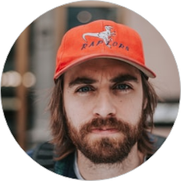

| Phone | +96597871470 |
| azad.wathefa@gmail.com | |
| Address | Farwaniyah, Kuwait |
| Date of brith | 30 Nov 1989 |
| License | yes |
| Nationality | Indian |
The WINNER of "WIKIPEDIA REDESIGN CHALLENGE" on UPLABS website. I am a product designer with a goal to design simple, easy to use, engaging User Interfaces which bring great User experiences and affect on people's life positively.
-Monitoring project progress; tracking action items; conducting design and implementation reviews; examining, researching, and resolving issues; escalating issues to appropriate authority; responding to team members' concerns; coordinating requirements with interested departments.
-Assures quality Web solution by developing and completing test plans; maintaining the project and technical documentation.
- Accomplishes work requirements by orienting, training, assigning, scheduling, coaching employees; following production, productivity, quality, and customer-service standards; identifying work process improvements. -
- Following up new business opportunities and setting up meetings
- Planning and preparing presentations
- Communicating new product developments to prospective clients
- Overseeing the development of marketing literature
- Attending conferences, meetings, and industry events
- Writing reports and Providing management with feedback
- Developing sales goals for the team and ensuring they are met
- Training personnel and helping team members develop their skills
-Monitoring project progress; tracking action items; conducting design and implementation reviews; examining, researching, and resolving issues; escalating issues to appropriate authority; responding to team members' concerns; coordinating requirements with interested departments.
-Assures quality Web solution by developing and completing test plans; maintaining the project and technical documentation.
-Accomplishes work requirements by orienting, training, assigning, scheduling, coaching employees; following production, productivity, quality, and customer-service standards; identifying work process improvements.
- Meets cost standards by monitoring expenses; implementing cost-saving actions.
- Provides project status reports by collecting, analyzing, and summarizing data and trends.
- Updates job knowledge by tracking technology and project management advances; participating in educational opportunities; reading professional publications; maintaining personal networks; participating in professional organizations.
-Accomplishes organization goals by accepting ownership for accomplishing new and different requests; exploring opportunities to add value to job accomplishments.
-Following up new business opportunities and setting up meetings
- Planning and preparing presentations
- Communicating new product developments to prospective clients
- Overseeing the development of marketing literature
- Attending conferences, meetings, and industry events
- Writing reports and Providing management with feedback
- Developing sales goals for the team and ensuring they are met
- Training personnel and helping team members develop their skills